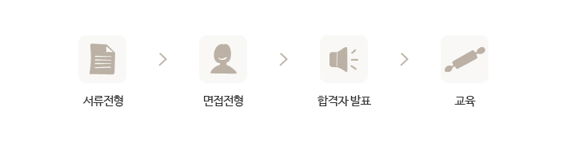

기사 채용안내
- 기사 채용안내
- 기사 채용공고
- 채용지역
기사채용 안내
뚜레쥬르에서는 제빵이론과 현장실무 위주의 냉동생지,생크림 케이크 제조등의 실기중심의 교육 프로그램을 바탕으로
실무 역량이 뛰어난 전문 기술인력을 배출하기 위해 교육을 실시하고 있습니다.
※ 테크니컬 센터 채용은 매일산업, 선일산업, 유일산업, 수인파트너스, 브레드텍 (5개) 업체에서 진행되며, CJ푸드빌과 무관하오니 참고하시기 바랍니다.
- 신입 생산기사 양성
- 경력기사 채용
푸드빌
- CJ푸드빌 교육소개
- 채용 및 입사지원 안내
- 교육과정
CJ푸드빌 교육소개
베이커리 산업에 필요한 점포기사를 양성하기 위하여 일반 제빵이론과 실습, 현장실무위주의 냉동생지실습,생크림케이크 제조실습 등, 실습 중심의 교육을 진행하고 있으며 무료로 양질의 교육을 제공하고 베이커리 산업에 필요한 기술 인력을 배출하기 위해 교육하고 있습니다.
또한 베이커리 기술인력 뿐 아니라 관련 산업의 매장 매니져, QC(품질관리), 점포창업 등의 기회를 제공하는 기술인력 성장의 장이 되고 있습니다.
현재 CJ푸드빌 교육은 실무 역량이 뛰어난 수준 높은 전문 기술인력을 배출하고 있으며 다양한 직무경험 기회를 제공하여 개인 역량개발 지원에도 박차를 가하고 있습니다.
채용공고 바로가기직무소개
1 ) 신규 가맹 점포 오픈지원
2 ) 신규점 및 기존점 생산지원
3 ) 점주기사 점포 대체 지원
지원자격
1. 고졸 이상(기졸업자 및 '23년 02월 졸업예정자)
2. 경력 무관 / 신입 지원 가능
3. 전국 출장 가능자
※ 위 내용에 대해 허위 사실 발견 등 부적격 사유 발생 시 채용이 취소될 수 있습니다.진행절차
 ※ 서류전형 합격자에 한아여 세부일정 별도 안내 ※ 상기 예정 일정은 회사 사정에 따라 변경 가능직무소개
- CJ푸드빌 외식브랜드(VIPS, 제일제면소 등) 35% 할인
- 4대보험 제공
- 경조사 지원(경조물품, 경조휴가, 경조금)
채용문의
jinchul.hwang@cj.net (문의 / 접수)
| 교육기간 | 8주 / 10주 (8H/일) |
|---|---|
| 교육내용 |
일반 재빵이론 및 실습 냉동반죽 이론 및 제조실습 생크림 cake 제조 실습 생산안전교육 개인 및 작업 위생교육(HACCP) 경력관리 및 직업의식 교육 현장 실습 전 Simulation |
테크니컬 센터
- 센터 소개
- 교육 과정
- 채용 절차
- 채용 문의
센터소개
지원 자격 조건
| 제과/제빵에 열의가 있는 자 | 신입- 경력, 학력, 연령, 성별 제한 없음 |
|---|---|
| 제과/제빵 관련자 | 경력- 일반제과 2년 이상인 자 |
테크니컬 센터 소개 교육과정
- 교육과정 : 뚜레쥬르 생산기사 양성과정
- 교육대상 : 취업의자가 강하고 베이커리 분야에 적성과 열정을 가지신 분
- 교육기간 : 테크니컬센터: 8 ~ 10주(8H / 일)
- 교육내용 : 냉동반죽 제조 실습, 생크림 케이크 제조 실습, 위생 관리등
- 교육장소 : 서울,경기(수원) 및 각 지방 센터
- 기타 : 교육비 전액 무료, 중식 제공, 훈련수당 지급(월 80%이상 출석시), 수료 후 성적 우수자 뚜레쥬르 취업알선, 취업 전 2 ~ 3개월 현장실습
채용절차

테크니컬 센터 교육관련 연락처
| 협력사 | 센터명 | 전화번호 | 담당지역 |
|---|---|---|---|
| 매일산업 | 제주 | 010-7151-0972 |
제주시 제주특별자치도 제주시 복지로 70, 3층 (방선문빌리지상가) |
| 이문 | 02-461-5073 |
서울 성동, 종로, 노원, 경기 의정부, 남양주, 양주, 포천, 동두천, 연천 등 서울특별시 동대문구 이문로136, 218호 |
|
| 송파 | 02-461-5073 | 서울 강남구, 강동구, 송파구, 서초구 서울특별시 송파구 석촌동 273-5 일신빌딩 6층 | |
| 화정 | 02-461-5073 |
서울 마포구, 서대문구, 은평구, 파주시, 고양시 경기도 고양시 화중로 219, 달빛마을 107-206호 |
|
| 강원 | 033-747-9062 |
강원도 전체, 영월, 태백 강원도 원주시 단계동 865-6 더 파크타워 5층 |
|
| 브레드텍 | 인천 | 032-511-9072 |
부평, 인천지역 인천광역시 부평구 부평6동 604-15번지 오상빌딩 2층 |
| 금정 | 031-268-9074 |
기도 수원시, 안양시, 안산시, 광명시, 평택시, 오산시, 용인시, 이천시, 인천지 경역 경기도 군포시 산본동 1026-52, 엘앤씨타워 401,402호 |
|
| 수인파트너스 | 발산 | 02-3661-2023 |
서울 관악구, 동작구, 구로구, 금천구, 양천구, 강서구/경기 부천, 김포/인천 서구, 강화 서울특별시 강서구 강서로 52길 50, 5층 |
| 성남 | 031-772-2023 |
경기도 성남시(분당), 용인시, 광주시 경기도 성남시 중원구 성남동 4170 한일타워 11층 |
|
| 선일산업 | 대전 | 042-624-6279 |
대전시, 충청도 전지역 대전광역시 동구 용전동 21-3 종근당빌딩1층 |
| 광주 | 062-972-6941 |
광주시, 전남지역 광주광역시 관산구 월계동890-4 신양매디컬빌딩302호 |
|
| 전주 | 063-252-6945 | 전주시, 전북지역, 충남 논산지역 전라북도 전주시 완산구 서신동 949-11번지 노블하우스 1층 | |
| 청주 | 043-233-6278 |
청주시, 세종시, 충북지역 충청북도 청주시 흥덕구 강서동 467 주산휴네스트 201호 |
|
| 순천 | 061-745-6941 |
순천, 여수, 광양지역, 전남 일부지역 전라남도 순천시 장천동 14-2번지 |
|
| 유일산업 | 대구 | 053-628-2030 |
대구시, 경북지역 대구광역시 달서구 달구벌대로 1686 송림타워 13층 |
| 부산 | 051-862-6747 |
부산시, 경남지역 부산광역시 부산진구 중앙대로 919 한들빌딩 5층 |
SPECIALSIT DREAM
제빵 스페셜리스트의 꿈, 뚜레쥬르에서 마음껏 펼쳐 보세요.
뚜레쥬르에서는 능력있는 제빵기술인을 수시로 모집하고 있습니다.
온라인으로 지원 하시면 즉시 담당자를 통해 면접 및 실기 테스트를 실행하며,
기능도에 따라 최대 2개월 이내 현장 실습과 교육 후 뚜레쥬르 점포 기사로 근무하실 수 있습니다.
※ 테크니컬 센터 채용은 매일산업, 선일산업, 유일산업, 수인파트너스, 브레드텍 (5개) 업체에서 진행되며,
CJ푸드빌 채용과 무관하오니 참고하시기 바랍니다.